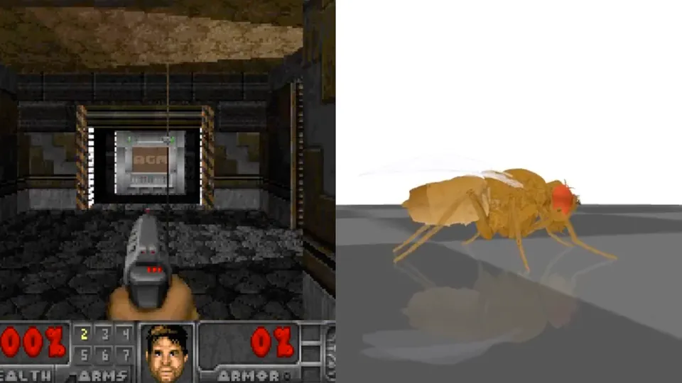

404 Media · Sep 2026
The internet wired a fly brain map into Doom
In September 2026, Janelia, Google and Cambridge published the first complete wiring map of a male fruit fly's brain and nerve cord. Within days, hobbyists hooked it up to Doom, Minecraft and Super Mario 64. A lot of hand-built code sits on top, so these are fun demos, not a fly that understands games.
166,700neurons in the male fly's brain and nerve cord
Read the 404 Media story